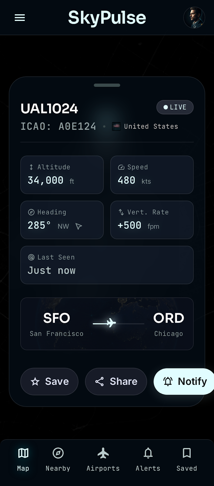
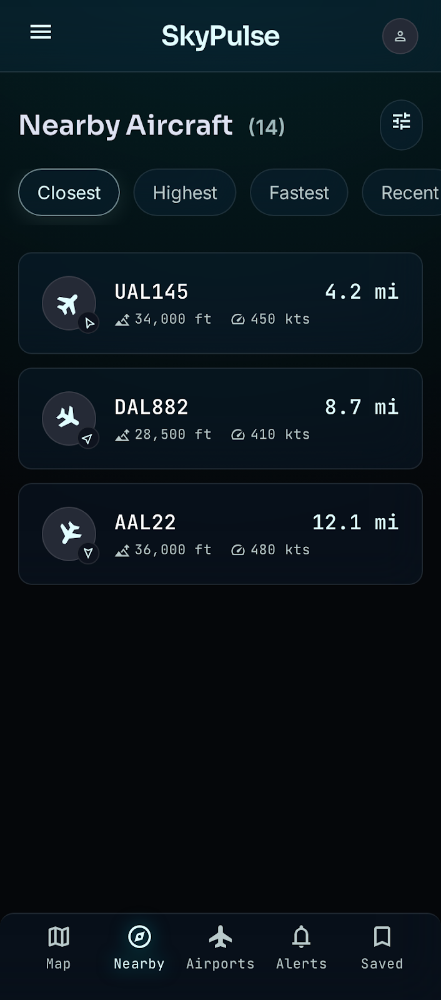
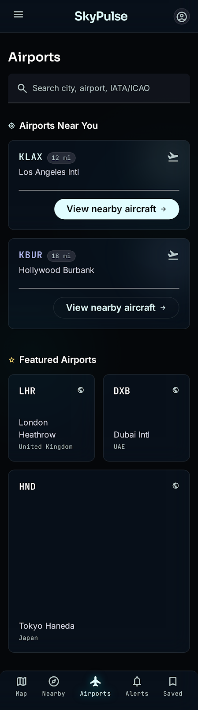
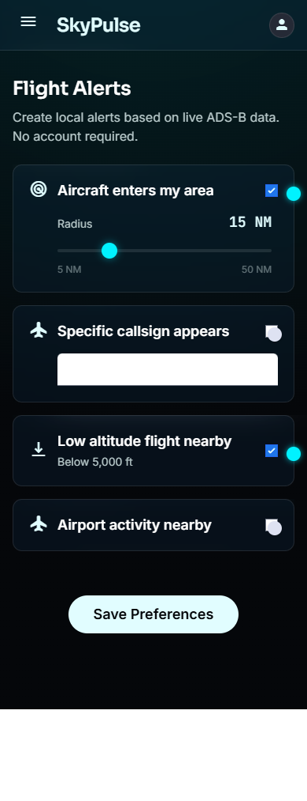
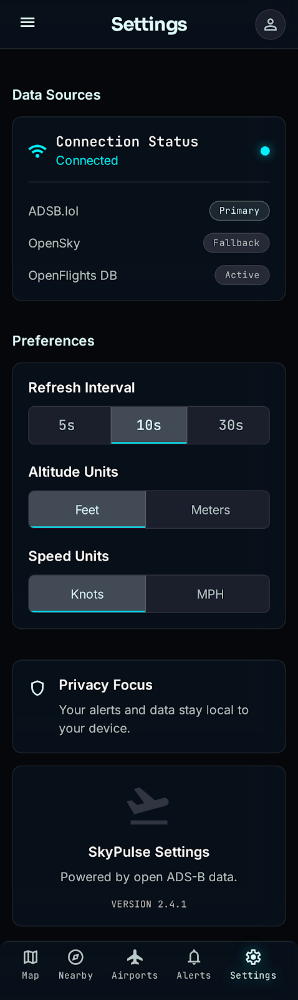

Built for enthusiasts
Everything you need to watch the skies, with honest handling of what free ADS-B data can and can't do.
Live map
OpenStreetMap tiles with aircraft markers rotated to heading. Tap any plane for a cockpit-style detail sheet.
Share a flight
Send any flight to a friend with one tap. They open a link to see its live position, route and details on the web — and can jump straight into the app.
Nearby & sorting
See aircraft around you sorted by closest, highest, fastest, or most recently seen.
Routes & ETA
Origin → destination (via the free adsbdb API) with an estimated progress bar and time-remaining from the live position.
Airport lookup
Search the full OpenFlights database by name, city, country, IATA or ICAO — plus airports near you.
Local alerts
On-device notifications when aircraft enter your area, a callsign appears, or a flight is low nearby. No backend.
Offline-aware
Cached snapshots and clear loading / empty / error / offline states keep things resilient.
Privacy-first
No account. Saved items and alerts stay on your device. Location is used only on-device.
Screens
Futuristic glassmorphism — a cockpit HUD that's still easy to read.





100% free, open data
No FlightAware, FlightRadar24, AviationStack, RapidAPI, or paid Google Maps. No key, no login.
| Layer | Source | Notes |
|---|---|---|
| Primary aircraft | ADSB.lol | Radius search around you |
| Fallback aircraft | OpenSky (anonymous) | Rate-limited → cached & throttled |
| Flight routes | adsbdb | Callsign → origin/destination (no key) |
| Airports / airlines | OpenFlights | Bundled, imported into Room |
| Map tiles | OpenStreetMap | via osmdroid |
Free ADS-B is best-effort: not every aircraft is guaranteed, coverage varies by area and time, data can be delayed, and some military/private aircraft may be hidden. Route/gate/boarding status isn't available on free feeds — SkyPulse says so plainly.